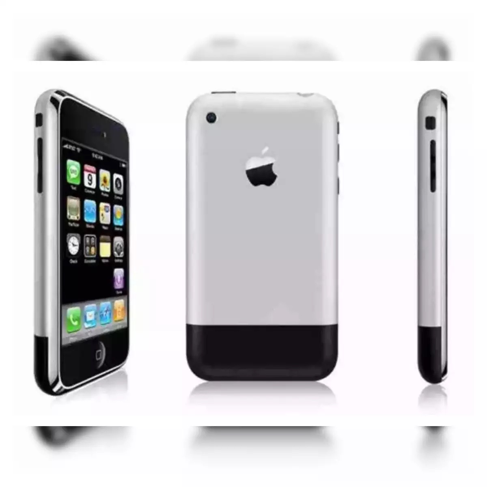

| Навігація: | Інформація | Особливості | Вплив | Цікаві факти |
| Перший iPhone: Революція у світі смартфонів |

|
iPhone — перший смартфон, розроблений компанією Apple Inc. Представлений Стівом Джобсом 9 січня 2007 року, він революціонізував ринок мобільних пристроїв. 🍎 Дата випуску в США: 29 червня 2007 року iPhone поєднав у собі функції мобільного телефону, плеєра iPod та інтернет-комунікатора. Його інноваційний сенсорний інтерфейс та App Store змінили спосіб взаємодії користувачів з мобільними пристроями. |
||||
| Ключові особливості |
|
| Вплив на індустрію |
|
iPhone змінив не лише ринок смартфонів, але й всю мобільну індустрію:
|
| Цікаві факти |
|
|